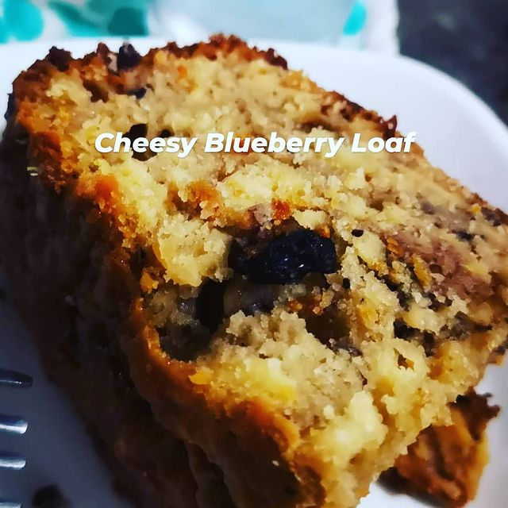
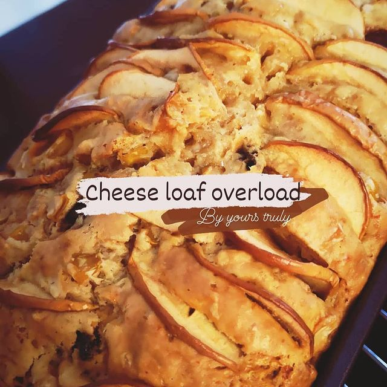
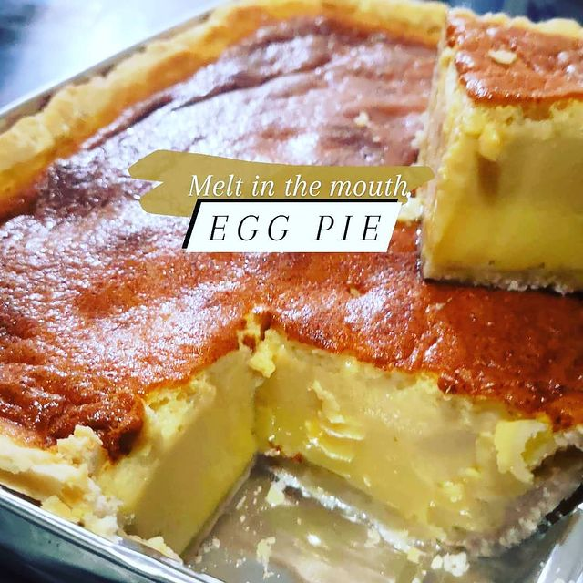

Products from 2 of the famous restaurant chain,
Pizza Hut and Greenwich
-
Banana Cake
A cake prepared using banana as a primary ingredient and typical cake ingredients. It can be prepared in various manners, including as a layer cake, as muffins and as cupcakes.
-
CheeseLoaf
A type of basic bread that is flavored with cheese. The cheese is often grated and kneaded into the dough and/or can be used to top the dough.
-
Egg Pie
Made with milk, sugar, eggs, and sometimes with a touch of calamansi juice/zest to brighten up this otherwise very sweet pie. In keeping with tradition, I used canned evaporated milk and sweetened condensed milk.
-
 Egg Tarts
Egg TartsOne of the most famous Chinese desserts is the classic egg tart, a delicious pastry consisting of a flaky outer shell with a creamy, but firm egg custard in the center. The origin of this traditional Chinese dessert is vague.